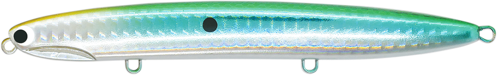
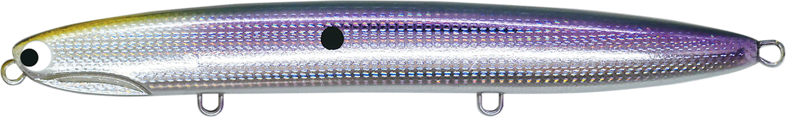
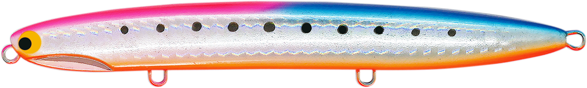
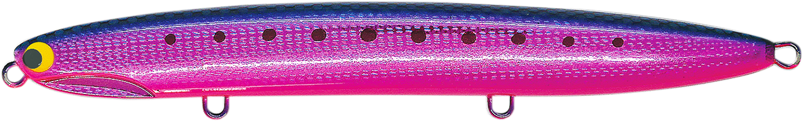
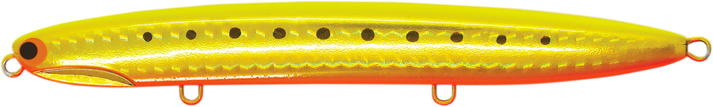
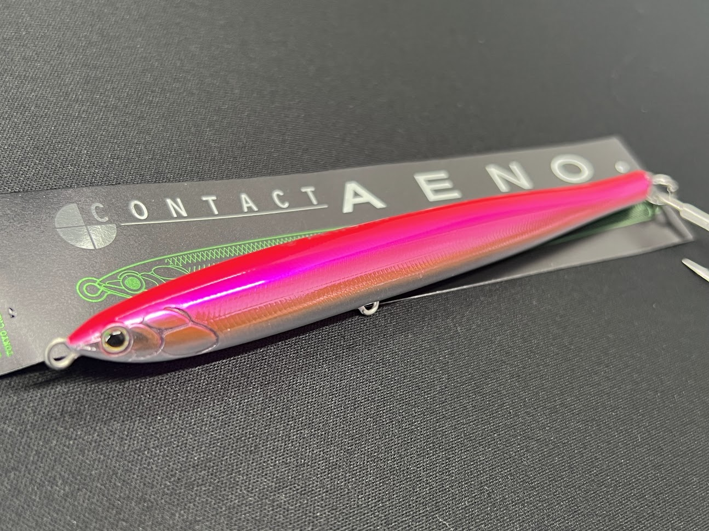

カタクチジョニー125S
（KATAKUCHI JOHNNY 125S）
カタクチジョニー125S（KATAKUCHI JOHNNY 125S）はPOZIDRIVE GARAGE（ポジドライブガレージ）のジグミノーです。
「抜群の飛距離と艶めかしい泳ぎをもったジグミノー」をコンセプトに、重量級・後方重心のスリムボディで遠投性に優れた1本。細身のジグミノーなのにロッドワークへの反応が良く、ただ巻きだけでは終わらない攻め方ができるのが最大の魅力です。

画像出典:ポジドライブガレージ公式HP
スペック
- メーカー
- POZIDRIVE GARAGE（ポジドライブガレージ）
- タイプ
- シンキングジグミノー
- 全長
- 125mm
- 自重
- 34g
- フック
- #5×3
- リング
- #4
- レンジ
- 60〜120cm
- ターゲット
- ヒラメ・マゴチ・シーバス・青物
- 価格
- 2,310円（税込）
- 発売
- 2019年9月
▼今すぐチェック

カタクチジョニー125Sの特徴
ジグミノーの飛距離に、ミノーのような操作性と艶めかしい泳ぎをプラスした1本
-
重量級・後方重心のスリムボディで抜群の飛距離
125mmで34gという重量級の設定と後方重心のスリムボディで、向かい風でも失速しにくい遠投性能を持つ。遠浅のサーフや広い河口で、沖のブレイクまで届かせたい場面に強い。
-
バックスライドフォールで速やかにレンジへ
フォールはバックスライドで速やかに沈み、ラインテンションのかけ方でフラッシングの強さも調整できる。着底までの間にも魚にアピールできるのがポイント。
-
スラローム系の泳ぎとロッドワークへの高い反応
リトリーブを始めると素早く浮き上がり、スラロームのような泳ぎを見せる。細身のジグミノーとしては珍しくロッドワークへの反応が良く、トゥイッチで左右へのスライドやヒラウチも可能。単調になりがちなジグミノーにはない引き出しを持っている。
カタクチジョニー125Sの使い方
基本はフルキャストしてボトムまで沈め、ただ巻きでスラロームアクションを出していく使い方。巻き始めに素早く浮き上がるので、レンジを下げたい時はリトリーブをややゆっくりめにするのがコツです。
反応がない時は、ただ巻きの途中にトゥイッチを入れて左右へのスライドやヒラウチを混ぜると、食わせの間とリアクションのきっかけを作れます。フォール中のフラッシングでも誘えるので、リフト＆フォールで着底を繰り返す攻め方も有効です。
カタクチジョニー125Sの得意な状況
遠浅のサーフや大河川の河口など、とにかく飛距離が必要なポイントが最大の出番。
サーフのヒラメ・マゴチといったフラットフィッシュから、外洋のシーバス・青物まで幅広く対応します。名前の通り、カタクチイワシなど細身のベイトが接岸している時期にシルエットを合わせやすい1本です。
ワンポイント
ジグミノーはただ巻き一辺倒になりがちですが、カタクチジョニーはトゥイッチへの反応が良いのが強み。
同じコースを通しても反応がない時は、ただ巻き→トゥイッチ→フォールと動きに変化をつけてみると、スレた魚にも口を使わせやすくなります。
人気カラー
カタクチジョニー125Sは全12色展開。サーフや青物狙いでオススメのカラーを厳選して紹介します。

#02 セグロイワシカタクチイワシ系ベイトに合わせやすいナチュラルカラー。澄み潮や日中に。

#07 ブルピンオレンジ青物狙いの定番ブルピンにオレンジをプラス。朝マズメのファーストキャストに。

#08 ドピンクイワシピンクの高アピールでサーフのヒラメや青物に強い1色。

#10 ゴールドチャート濁り潮やローライト時に存在感を出せるゴールド×チャート。
画像出典:ポジドライブガレージ公式HP
カタクチジョニー125Sに似ているルアー
-

コンタクト イーノ タックルハウス 詳細はこちら＞全長129mm・自重30gのジグミノー。ジグ並みの飛距離とロールを伴うテールスイングを両立し、サワラが釣れると話題になった1本で、遠投して広く探るという使いどころが共通する。
-
 ビスタ100S
DUO
詳細はこちら＞
ビスタ100S
DUO
詳細はこちら＞
全長100mm・自重34gのジグミノー。固定重心・高比重センターバランスで飛距離とレンジキープを両立するサーフ特化モデルで、サーフのフラットフィッシュ狙いで選択肢が重なる。
-
 ブローウィン140S
ブルーブルー
詳細はこちら＞
ブローウィン140S
ブルーブルー
詳細はこちら＞
サーフや河口の遠投ゲームで定番のスリムなシンキングミノー。細身のシルエットで飛距離を出しながら広く探るという考え方がカタクチジョニー125Sと近い。